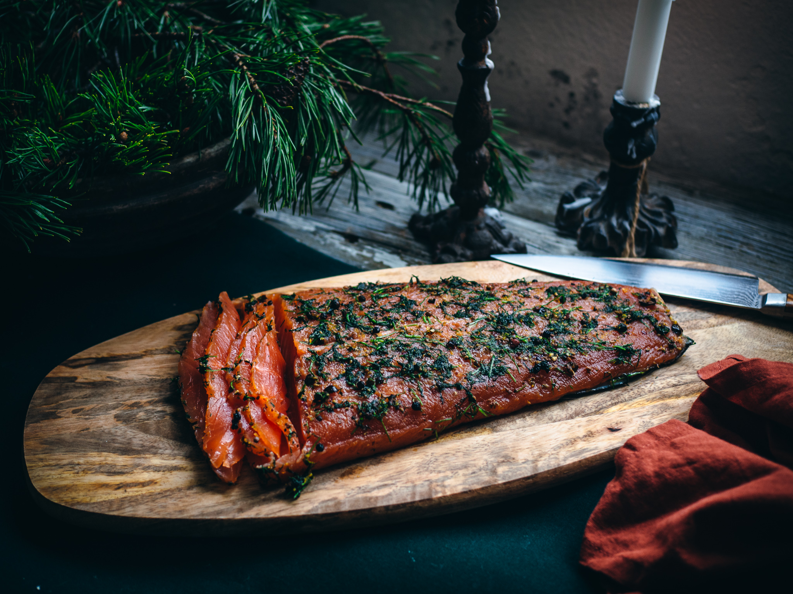

ODIN'S GRAVLAX OF WISDOM/h1>

Description
“May this mighty dish grant you the wisdom of Odin and the appetite of a berserker!”
Legend has it that this delicate salmon dish was the very meal Odin feasted upon after hanging from Yggdrasil for nine days (he also enjoyed a good side of mead, but that’s another recipe). Crafted with care, much like forging the finest weapons, this Scandinavian delicacy is made by curing salmon with an enchanted blend of herbs and spices straight from the Nine Realms. Thinly sliced and served on rye bread, it’s the kind of meal that’ll have you seeing through ravens' eyes… or at least keep you full until the next feast in Valhalla.
Ingredients
- Salmon fillet: Caught fresh, as if reeled in by Odin himself from the world’s mightiest fjord.
- Salt and sugar: To cure the fish, much like how Odin cures the foolishness of mortals with a stern glare.
- Fresh dill: Plucked straight from Freya’s garden (or your local grocery store).
- Cracked black pepper: As fierce as a Valkyrie in battle.
- A pinch of truth: This one’s harder to find—perhaps consult a seer.
Directions
- Place the salmon fillet skin-side down, channeling Odin’s calm, all-knowing energy (you’ve got this).
- In a separate bowl, combine the salt, sugar, dill, and pepper. Stir as if you were concocting an elixir of wisdom for the Nine Realms.
- Rub the cure over the salmon like Odin gently rubbing his ravens, Huginn and Muninn. Make sure it’s evenly spread, because uneven curing could anger the gods.
- Wrap the salmon tightly in plastic wrap—yes, even gods use plastic wrap—and place a heavy weight on top (Mjölnir works great if you have one).
- Leave it to cure in the fridge for 24 to 48 hours, or as Odin says, “Let it be until the signs from the stars are clear.”
- Once cured, thinly slice the salmon, as Odin slices through deception with his wisdom.
- Serve on rye bread or crispbread, and garnish with more dill if you seek the favor of the gods.